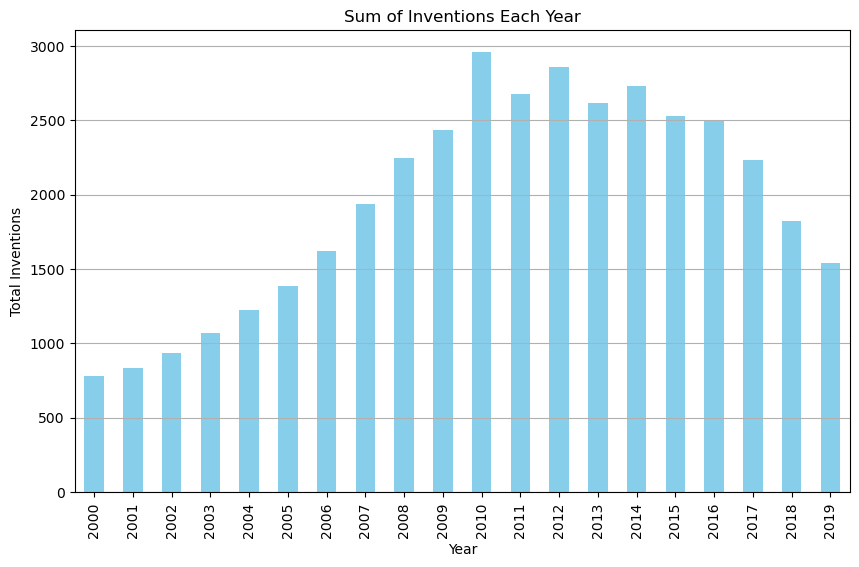
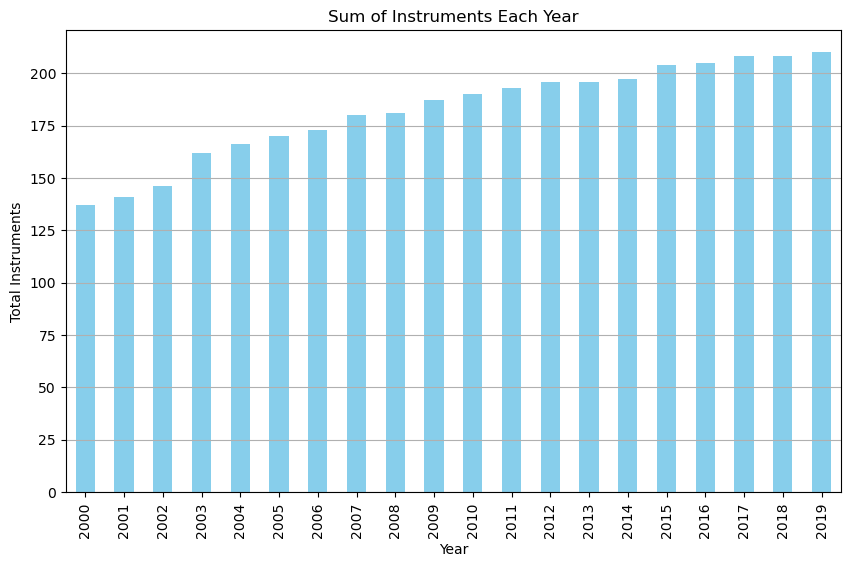
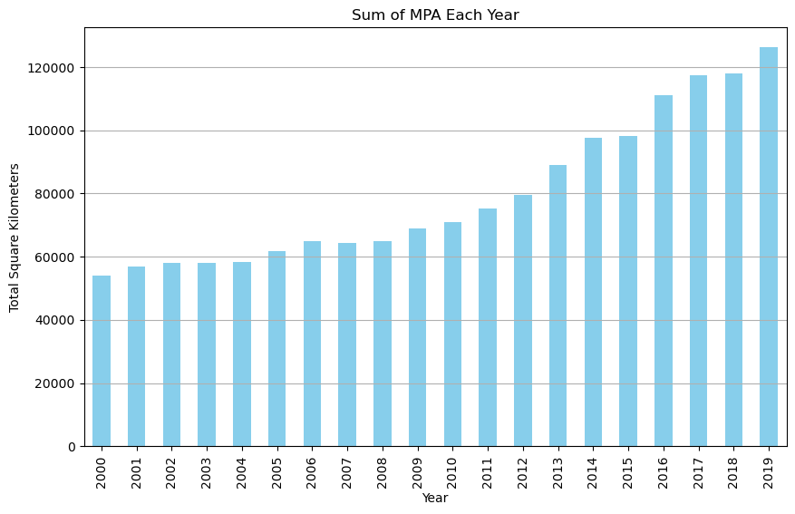
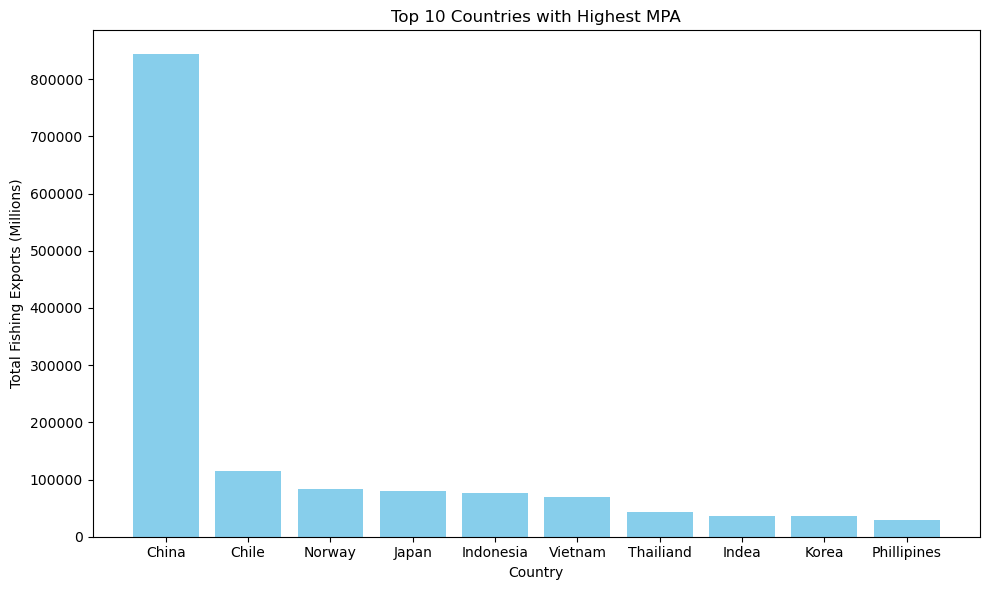
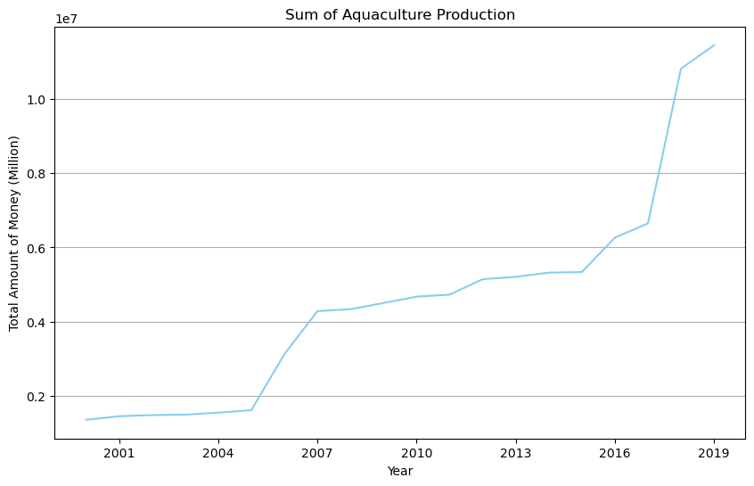
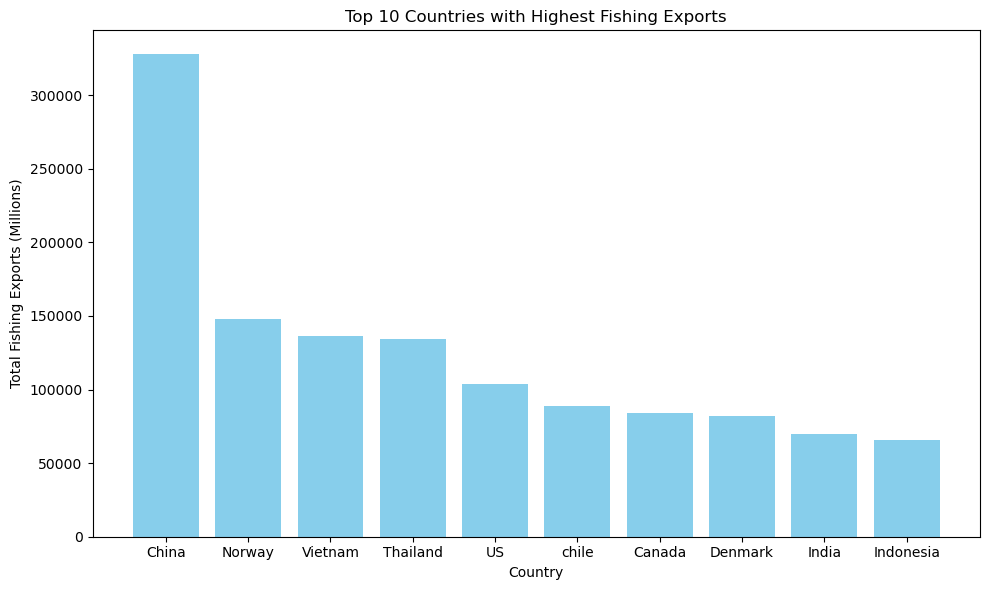
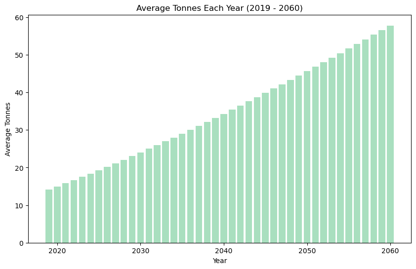

“Exploratory Data Analysis refers to the critical process of performing initial investigations on data so as to discover patterns, to spot anomalies, to test hypothesis and to check assumptions with the help of summary statistics and graphical representations.” - towarddatascience.com
Data Understanding
In order to thoroughly understand this merged dataset I ran some simple code to see things like columns names, data type, the length of the data set and distinct countries.
I also highlited how this dataset can help me reach my overall project goals.
Index(['Aqua Production (Millions)', 'Marine Protected Area (sqkm)',
'Inventions (number)', 'Instruments (number)',
'Fishing Exports (Millions)', 'Country', 'Year'],
dtype='object')
Column Names in Data Set:
Country
Year
Aqua Production
Marine Protected Area
Inventions
Instruments
Fishing Exports
#Data Types of Datasetcolumn_types = merged.dtypesprint(column_types)
Aqua Production (Millions) float64
Marine Protected Area (sqkm) float64
Inventions (number) float64
Instruments (number) float64
Fishing Exports (Millions) float64
Country object
Year int64
dtype: object
#Length of Data Setlength =len(merged)#Distict Countriesdistinct_country_count = merged['Country'].nunique()lengthdistinct_country_count
43
This dataset has 860 Rows and there are 43 distinct countries analyzed
Although this dataset is small, it holds a lot of power in understanding what is being done to help ocean sustainability. It includes data from 2000 through 2021 from 43 different countries. Using this dataset we can analyze aquaculture production and how much money it has brought in, marine protected areas in each country, the number of environmental technology inventions that have been created, the number of policy instruments created and the amount of money countries make in fishing exports.
All these values can answer questions regarding the importance of ocean sustainability and what is currently being done and more specifically questions like:
Does the amount of marine protected area in a country impact aquaculture production or is there a correlation between inventions and fishing exports.
Descriptive Statistics
This section will report on basic summary staistics such as mean, median, mode, standard deviation, and variance for numerical variables. For categorical variables, I will provide frequency distributions and bar charts to visualize data distribution.
This dataset includes mainly numerical data with the only categorical variable being country.
#Aquaculture Summary Statisticsa_p_summary = merged[["Aqua Production (Millions)"]].describe()a_p_summary
Aqua Production (Millions)
count
8.600000e+02
mean
1.055889e+05
std
3.111661e+05
min
0.000000e+00
25%
3.380500e+03
50%
9.363000e+03
75%
5.673412e+04
max
3.036163e+06
#Marine Protected Area Statisticsmpa_summary = merged[["Marine Protected Area (sqkm)"]].describe()mpa_summary
import matplotlib.pyplot as pltimport pandas as pd#Sum of Inventions Each Yearyearly_inventions = merged.groupby('Year')['Inventions (number)'].sum()plt.figure(figsize=(10, 6))yearly_inventions.plot(kind='bar', color='skyblue')plt.title('Sum of Inventions Each Year')plt.xlabel('Year')plt.ylabel('Total Inventions')plt.grid(axis='y')

Sum of Policy Instruments throughout the Years
Code
import matplotlib.pyplot as pltimport pandas as pdimport numpy as npfrom scipy.stats import linregress# Sum of Instruments Each Yearyearly_Instruments = merged.groupby('Year')['Instruments (number)'].sum()plt.figure(figsize=(10, 6))yearly_Instruments.plot(kind='bar', color='skyblue')plt.title('Sum of Instruments Each Year')plt.xlabel('Year')plt.ylabel('Total Instruments')plt.grid(axis='y')

Sum of MPA throughout the Years
Code
import matplotlib.pyplot as pltimport pandas as pdimport numpy as npfrom scipy.stats import linregress# Sum of MPA Each Yearyearly_Instruments = merged.groupby('Year')['Marine Protected Area (sqkm)'].sum()plt.figure(figsize=(10, 6))yearly_Instruments.plot(kind='bar', color='skyblue')plt.title('Sum of MPA Each Year')plt.xlabel('Year')plt.ylabel('Total Square Kilometers')plt.grid(axis='y')

Countries with the highest total area of MPA
Code
#Find top countries with highest MPAtop_countries = merged.groupby('Country')['Marine Protected Area (sqkm)'].sum().sort_values(ascending=False)top_10_countries = top_countries.head(10)table_data = pd.DataFrame({'Country': top_10_countries.index, 'Marine Protected Area (sqkm)': top_10_countries.values})print(table_data)
Country Marine Protected Area (sqkm)
0 China (People's Republic of) 843249.84
1 Chile 115489.24
2 Norway 83016.63
3 Japan 80382.20
4 Indonesia 76453.48
5 Viet Nam 70032.87
6 Thailand 43488.91
7 India 36633.87
8 Korea 36603.22
9 Philippines 29269.94
Code
import matplotlib.pyplot as pltimport pandas as pdcustom_labels = ['China', 'Chile', 'Norway', 'Japan', 'Indonesia', 'Vietnam', 'Thailiand', 'Indea', 'Korea', 'Phillipines']plt.figure(figsize=(10, 6))plt.title('Top 10 Countries with Highest MPA')plt.xlabel('Country')plt.ylabel('Total Fishing Exports (Millions)')plt.bar(custom_labels, table_data['Marine Protected Area (sqkm)'], color='skyblue')plt.tight_layout()

Sum of Aquaculture Production throughout the Years
Code
import matplotlib.pyplot as pltimport pandas as pdimport numpy as npfrom scipy.stats import linregressimport matplotlib.ticker as ticker# Sum of Aqua Productions Each Yearyearly_Instruments = merged.groupby('Year')['Aqua Production (Millions)'].sum()plt.figure(figsize=(10, 6))yearly_Instruments.plot(kind='line', color='skyblue')plt.title('Sum of Aquaculture Production')plt.xlabel('Year')plt.ylabel('Total Amount of Money (Million)')plt.grid(axis='y')# Set x-axis tick labels to integersplt.gca().xaxis.set_major_locator(ticker.MaxNLocator(integer=True))# Show the plotplt.show()

Countries with highest Aquaculture Production
Code
top_countries = merged.groupby('Country')['Aqua Production (Millions)'].sum().sort_values(ascending=False)top_10_countries = top_countries.head(10)table_data = pd.DataFrame({'Country': top_10_countries.index, 'Aqua Production (Millions)': top_10_countries.values})print(table_data)
Country Aqua Production (Millions)
0 United States 23311325.00
1 New Zealand 16571948.95
2 Australia 16034834.30
3 Japan 5798389.20
4 Chile 4858410.35
5 Mexico 3492952.65
6 Brazil 2899993.85
7 Indonesia 2227158.50
8 France 2006056.35
9 Russia 1780853.55
Code
import matplotlib.pyplot as pltimport pandas as pdimport numpy as np#Specific Countires to Plotcountries_to_plot = ['United States', 'Japan', 'Australia', 'Mexico', 'New Zealand', 'Chile']plt.figure(figsize=(10, 6))plt.title('Sum of Aquaculture Production')plt.xlabel('Year')plt.ylabel('Total Amount of Money (Million)')plt.grid(axis='y')# Plot lines for the specified countriesfor country in countries_to_plot: country_data = merged[merged['Country'] == country] yearly_production = country_data.groupby('Year')['Aqua Production (Millions)'].sum() plt.plot(yearly_production.index, yearly_production.values, label=country)plt.legend()plt.gca().xaxis.set_major_locator(ticker.MaxNLocator(integer=True))
Country Fishing Exports (Millions)
0 China (People's Republic of) 327595.17
1 Norway 147995.31
2 Viet Nam 136660.23
3 Thailand 134184.37
4 United States 103411.96
5 Chile 88632.65
6 Canada 83998.86
7 Denmark 82218.99
8 India 69493.75
9 Indonesia 65525.58
Code
import matplotlib.pyplot as pltimport pandas as pdcustom_labels = ['China', 'Norway', 'Vietnam', 'Thailand', 'US', 'chile', 'Canada', 'Denmark', 'India', 'Indonesia']plt.figure(figsize=(10, 6))plt.title('Top 10 Countries with Highest Fishing Exports')plt.xlabel('Country')plt.ylabel('Total Fishing Exports (Millions)')plt.bar(custom_labels, table_data['Fishing Exports (Millions)'], color='skyblue')plt.tight_layout()

Predicted Plastic Leakage
Code
data1a = pd.read_csv('/Users/kendallgilbert/dsan-5000-project-kendallgilbert180/dsan-website/5000-website/data/01-modified-data/cleandata1a.csv')#average Tones by Yearaverage_tonnes = data1a.groupby("Time")["Value"].mean()# Bar Chart - Average Tonnes Each Yearplt.figure(figsize=(10, 6))plt.bar(average_tonnes.index, average_tonnes.values, color='#A9DFBF')plt.xlabel("Year")plt.ylabel("Average Tonnes")plt.title("Average Tonnes Each Year (2019 - 2060)")plt.show()

Correlation Analysis
To see an indepeth correlation analysis between variable follow this link here
Outliers
Throughout this univariate EDA phase I have noticed a few outliers. First, I noticed that China’s fishing exports are very large in comparison to the following nine countries. Additionally, Australia’s numbers are high when it comes to aquaculture production.
I do not think outliers like these will be a problem within this project as these high number make sense for the location of these countries.
Hypthesis Generation
I am keeping the hypothesis I have created in the introduction. I believe this data holds the power to clearly and concisely display the need for ocean sustainability in addition to what is being done and how it has helped so far. This data has the ability to help researchers, policy makers, etc understand what countries are doing well in regard to ocean sustainability. I will touch upon (also have touched upon) reaching my goals for this project when explaining visualization and models in this project.
Methods and Findings
This univariate EDA helped me grasp a good understanding of my data and a few key trends that I will look further into it different phases of this project. A few key takeaways from this univariate eda are:
The number of environmental technology inventions increased around 2010 and since then has decreased
The number of policy instuments are slowly increasing each year
Aquaculture Production is increasing
Aquaculture prodiction is highest in the United States, New Zealand and Australia
MPA is increasing
MPA area is highest in China
The predicted average tonnes of plastic is steadily increasing untill 2060
Overall, this univariate and multivariate data analysis helped me understand that this data set has the potential to display the need for ocean sustainability in addition to what is being done and how it has helped so far.
By the end of the project, I believe the variables within this dataset will act a tool for organizations, local governments and developers to refence in regards to understanding ocean sustainability and taking action towards more ocean sustainability.
For example, a local official could see trends within a country with an increase in MPA and see what variables have helped this result as well as what has come from this increase in MPA.